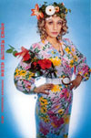

|
|
|
|
2005'05 ここでご紹介した本はいずれも最寄りの書店、または当ホームページ「ご購入について」の中のオンライン書店等経由でお求めいただけます。 |
「晶文社45周年フェア」を神保町の三省堂書店神田本店1階にて開催!! 1階フロアで「国書刊行会僅少本フェア」と「河出書房新社僅少本フェア」の間にはさまれて、「晶文社45周年フェア」は晶文社の人気本（＝ロングセラー）64点を展開！5月1杯開催しています。ぜひ一度お立ち寄りください。 |
人文書600点フェア開催！ 紀伊国屋書店新宿南店にて四つのフェアが同時開催されます。書物復権フェア、人文会戦後60年フェア、アジアの本の会フェア、四六版宣言フェアの四つのフェアです。場所は高島屋から渡り廊下でつながっている三階の文芸フロアのメインフェア台。人文書600点が一同に会します。ご期待ください。 |
山崎まどかさんオススメ洋書フェアを青山ブックセンター本店にて開催 山崎まどかさんが選んだ小説やノンフィクションのペーパーバック、ハードカバーを集めたフェアです。店頭にて山崎さんのオススメコメント、ショートエッセイが読める小冊子が配布されます。 |
映画『Little Birds』が４月23日より公開 本当のイラク戦争の姿を描いた話題作、『Little Birds-イラク戦火の家族たち-』が、４月23日新宿K's Cinemaを皮切りに、全国主要都市で順次公開されています。アメリカ軍によるイラク侵攻以来、「News23」などで精力的にイラクからの中継リポートを続け数々の賞を受賞したジャーナリスト綿井健陽監督が、１年半の取材映像から完成させた劇場用映画です。公開と同時に、最前線のレポート、撮影日記をまとめたノンフィクション『リトルバーズ──戦火のバグダッドから』も小社より４月末に発売。テレビでは伝えられることのなかった戦争の現実を、受けとめてみてください。 新潟 札幌 京都 福岡 福島 他 全国主要都市にて順次公開 ●公式ホームページ |
カンバック、石田千さん！ こんにちは。楽しい、嬉しいお知らせが一つ、です。 （編集部） |
『テレピン月日』の大竹伸朗さん個展 作家の、日常の心に浮かんだ風景を描いた作品が展示されます。 'On paper'大竹伸朗展 |
森村泰昌さん5月21日より個展開催！ 「森村泰昌諷刺家伝ゴヤに捧ぐ」と題し、ショウゴア－ツにて7月2日まで。  |
小野博さん、グループ展出展 当HPでの連載も話題の写真家小野博さんが、風景をテーマにしたグループ展に参加します。 風景遊歩 sight-cruising 会期：2005年3月13日(日)－6月12日(日) 会期中無休 セクション1 ［出品作家］：秋岡美帆、猪熊弦一郎、牛島憲之、香月泰男、曽根裕、高橋信行、野村仁、畠山直哉、福岡道雄、やなぎみわ、柳幸典 セクション2 ［出品作家］：会田誠、猪熊弦一郎、大岩オスカール幸男、小野博、小林孝亘、高木正勝、中川幸夫、野口里佳、藤本由紀夫、ソフィ・カル、アルフレッド・ジャー |
お知らせ！図書目録最新版ができました！ お待たせいたしました。図書目録2005年版ができました。現在、小社が在庫する書籍タイトルを網羅した目録です（品切れ書籍のリストもあります）。ご希望の方は、こちらのフォーマットからお申し込みください。 |
祝！前田速夫さん、読売文学賞受賞!! 前田速夫著『余多歩き‐菊地山哉の人と学問』（晶文社刊）が評論・伝記賞を受賞しました。戦後長くアカデミズムから黙殺されてきた、在野の民俗学者に光をあてたこの本は、東京市の土木役人と二足のわらじをはきながら、全国の被差別部落をくまなく踏査、その多くでまつられる白山神社に着目して独自の歴史観を打ち出した菊池山哉（1890～1966）の初の本格評伝となります。
|
|||
朝日カルチャーセンター公開講座に注目！ |
信田さよ子さん講演スケジュール 「新・愛と執着のはざま」を好評連載の信田さよ子さんが、日本各地で講演会を行います。詳細は以下のとおりです。 家族関係のカウンセリング －児童虐待の周辺のケアをめぐって－ 名古屋市 DVと虐待について（仮） 仙台市 公開シンポジウム テーマ「家庭内の暴力-この10年を振り返る」 女性に対する暴力をなくす運動週間 |
『「心」と戦争』『平和と平等をあきらめない』が好評の高橋哲哉さんの講演会ご案内です。 グリーンコープかごしま30周年記念講演会 死刑執行停止に関する全国公聴会Ⅰ 東京公聴会 第24回政教分離を守る北海道集会 日本消費者連盟第32回総会記念講演会 季刊『前夜』ブック・トーク |
明川哲也さん出演の『爆笑問題のススメ』がDVDに! 毎回多彩な作家ゲストを迎えるテレビのトークバラエティーがDVDになりました。「作家の目線V.S爆笑問題の目線」で熱く切り込んでいきます。核心は突いてはいても涙を飲んでカットせざるを得なかった未放送シーンを、ふんだんに収録。番組を見ていない人はもちろん、見た人にも新たなサプライズが待っています! 弊社刊『メキシコ人はなぜハゲないし、死なないのか』も好評の明川哲也さん(TETSUYA）も登場します。 「爆笑問題のススメVol.2 実はこんなトーク、カットしてました 日本を代表する裏・文化人 編」 収録作家（順不同）: 発売:2004年12月22日 |
■CD-ROM 独特の描き文字で知られるグラフィックデザイナー平野甲賀さんのその膨大な仕事の中から200点を厳選、再生して収録。見るだけで圧巻です。「仮名フォントkouga grotesque01～04」はキーボードから打ち出すことができ、どなたでも使用可能です。 価格 13,650円（税込） お問合せ先は発売元の BZBZへ http://www.bzbz.org/kouga/ 詳しくはBZBZ内の平野甲賀さんのサイト『ときどきの平野甲賀』をご覧ください。 |
|
本に掲載された村木与四郎さん、忍さんのスケッチの一部を、複製して販売します。
村木与四郎さんのサイン入りで、A3サイズの複製画を額装したものを４点、各100枚の限定販売。さらに、ポストカードを12枚1組で好評販売中。
|
アメリカン・コミックス大全（仮）小野耕世 予価2000円 ミャンマーという国への旅（仮）エマ・ラーキン 大石健太郎訳 3000円 なぜ「話」は通じないのか──コミュニケーションの不自由論 仲正昌樹 1600円 「健康によい」とはどういうことか 斎藤清二 1600円 鉄道愛【日本篇】 小池滋 予価1800円 ワールドミュージック日記 北中正和 予価1900円 ファンキー・ジャズの勉強（復刻版）植草甚一 1470円 小説は電車で読もう（復刻版）植草甚一 1470円 J・J氏のディスコグラフィー（復刻版）植草甚一 1470円 |
| 人生の特別な一瞬 長田弘／2刷一六八〇円 普及版 数の悪魔 エンツェンスベルガー／16刷一六八〇円 考える練習をしよう バーンズ／52刷一七三三円 自分をまもる本 ストーンズ／23刷一二六〇円 |